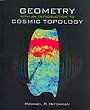

Welcome
Mike Hitchman's open-content text Geometry with an Introduction to Cosmic Topology offers an introduction to non-Euclidean geometry through the lens of questions that have ignited the imagination of stargazers since antiquity. What is the shape of the universe? Does the universe have an edge? Is it infinitely big?
This text is intended for undergraduate mathematics and physics majors who have completed a multivariable calculus course and are ready for a geometry course in which to develop and explore planar hyperbolic, Euclidean, and elliptic geometries from the point of view of the Erlangen Program. That is, we develop geometry in terms of a space and a group of transformations of that space. The canvas on which we build geometry is the complex plane, and the transformation groups will be formed from Möbius transformations. The text goes on to consider geometry on surfaces, and how an inhabitant on such a surface might detect the geometry and/or shape of its universe.
The text is also particularly suited to independent study. The mathematical content is complemented in several sections by essays that aim to provide context and motivation for the geometry we study, and the text contains over 200 exercises and 175 figures. Dynamic geometry activities complement the material as well. Read more about the text below, or get right to it, either online, or with a printable document.
Previously published by Jones & Bartlett in 2009 under the cover at right, the author now happily makes an updated and revised edition freely available here, thanks in large part to the Mathbook XML Project. The Mathematical Association of America offered this review of Geometry in 2009, adding the text to its Basic Library List.
Read the text
You can read the online version right now, or download a corresponding static document. If you would like a bound hard copy to hold in your hands or to have on your shelf, you may purchase one at some point soon.
Reading the text online
An online text is fabulous at linking content, but we emphasize that this text is meant to be read. It was written to tell a mathematical story. It is not meant to be a collection of theorems and examples to be consulted as a reference. As such, online readers are encouraged to turn the pages using the arrow buttons on the browser as opposed to clicking on section links. Read the content slowly, participate in the examples, and work on the exercises. Grapple with the ideas, and ask questions. Feel free to contact the author with questions or comments about the material.
Supplementary Materials
- Some Geometer's Sketchpad activities for manipulating figures in non-Euclidean geometry.
- A Hitchman general audience lecture on geometry and cosmic topology
Figures in the text
Originally, the vast majority of the figures appearing in the text were generated using The Geometer's Sketchpad. In the present edition, these figures have been redrawn as TikZ images, authored in LaTeX. If you are interested in obtaining the code for these images, please contact the author.
More about the text
Mathematicians and cosmologists have expended considerable amounts of effort investigating the shape of the universe, and this field of research is called cosmic topology. Geometry plays a fundamental role in this research. Under basic assumptions about the nature of space, there is a simple relationship between the geometry of the universe and its shape, and there are just three possibilities for the type of geometry: hyperbolic geometry, elliptic geometry, and Euclidean. These are the geometries we study in this text.
Chapters 2 through 7 contain the core mathematical content. The text follows the Erlangen Program, which develops geometry in terms of a space and a group of transformations of that space. Chapter 2 focuses on the complex plane, the space on which we build two-dimensional geometry. Chapter 3 details transformations of the plane, including Möbius transformations. This chapter marks the heart of the text, and the inversions in Section 3.2 mark the heart of the chapter. All non-Euclidean transformations in the text are built from inversions. We formally define geometry in Chapter 4, and pursue hypberbolic and elliptc geometry in Chapters 5 and 6, respectfully. Chapter 7 begins by extending these geometries to different curvature scales. Section 7.4 presents a unified family of geometries on all curvature scales, emphasizing key results common to them all. Section 7.5 develops the topology of surfaces, and Section 7.6 relates the topology of surfaces to geometry, culminating with the Gauss-Bonnet formula. Section 7.7 discusses quotient spaces, and presents an important tool of cosmic topology, the Dirichlet domain.
Two essays bookend the core content. Chapter 1 introduces the geometric perspective taken in this text. In my experience it is very helpful to spend time discussing this content in class. The Coneland and Saddleland exercises in Chapter 1 have proven particularly helpful for motivating the content of the text. In Chapter 8, after having developed two-dimensional non-Euclidean geometry and the topology of surfaces, we glance meaningfully at the present state of research in cosmic topology. Section 8.1 offers a brief survey of three-dimensional geometry and 3-manifolds, which are possible shapes of the universe. Sections 8.2 and 8.3 present two research programs in cosmic topology: cosmic crystallography and circles-in-the-sky. Measurements taken and analyzed over the last twenty years have greatly altered the way many cosmologists view the universe, and the text ends with a brief discussion of our present understanding of the state of the universe.
Compass and ruler constructions play a visible role in the text, primarily because inversions are emphasized as the basic building blocks of transformations. Constructions are used in some proofs (such as the Fundamental Theorem of Möbius Transformations) and as a guide to definitions (such as the arc-length differential in the hyperbolic plane). We encourage readers to practice constructions as they read along, either with compass and ruler on paper, or with software such as The Geometer's Sketchpad or Geogebra.
Contact
Mike Hitchman
Department of Mathematics
Linfield College
mhitchm (at) linfield (dot) edu
July, 2017
Copyright © 2017 Michael P. Hitchman. [Page design adapted from Slate theme by Jason Costello] [Published with GitHub Pages]